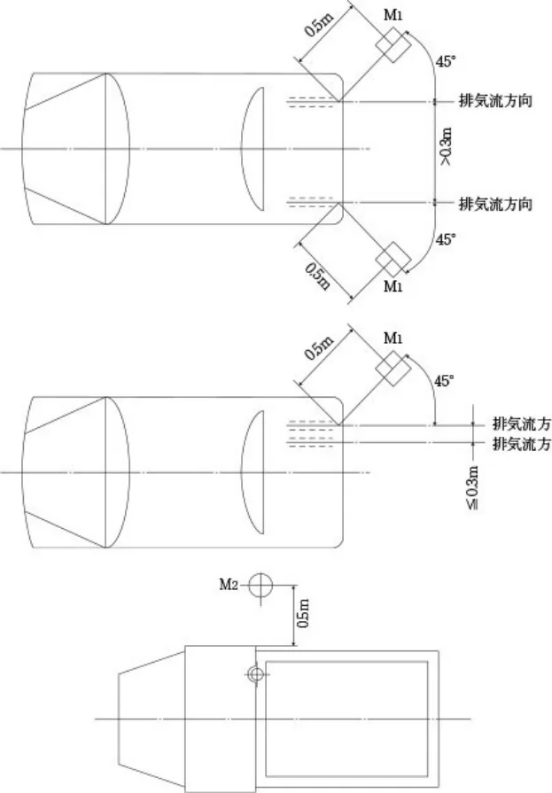

ラリー車両およびスピード車両の排気音量測定に関する指導要綱
P.1ラリー車両およびスピード車両（Ｐ車両、ＰＮ車両、Ｎ車両、ＳＡ車両、ＳＡＸ車両、Ｂ車両、ＡＥ車両）
の排気音量測定に関する指導要綱
本指導要綱は、ＪＡＦ公認競技会特別規則書に規定することにより排気音量測定を行う場合の測定値および測定方法と
して、道路運送車両の保安基準に準拠したものである。
１．測定自動車の状態
測定自動車は適当な速度で走行することにより十分暖機されている状態であること。
２．測定機器等の調整等
２.１騒音測定装置
２.１.１騒音計等
一騒音を測定する装置は、次のいずれかに掲げるものであり、使用開始前に十分暖機し、その後校正を行った上で使用すること。
（1）騒音計は、ＪＩＳ Ｃ1505-1988「精密騒音計」によるもの又はこれと同等の性能を有するものであること。
（2）音量計は、道路運送車両法施行規則第57条第１項第４号に定める技術上の基準に適合しているものであること。
二周波数補正回路の特性は、Ａ特性とする。
三指示機構の動特性は、「速い動特性（ＦＡＳＴ）」を有する騒音計等にあっては、「速い動特性（ＦＡＳＴ）」とする。
２.１.２原動機回転計
原動機回転計は、自動車に備えられたもの以外のものを用いるものとする。
２.１.３自動記録装置
自動記録装置を用いる場合には、記録装置の動特性は２.１.１の第三号に準じた状態とする。
２.２マイクロホン
騒音計のマイクロホンは、次の各号に掲げる位置及び向きにウインドスクリーンを装着した状態で設置する。この場
合において、マイクロホンの位置とは、マイクロホンの前面の中心の位置をいう。また、マイクロホンの向きについてその製作者が特に指示する場合はその指示による。一マイクロホンの位置は、排気流の方向を含む鉛直面と外側後方４５°に交わる排気管の開口部中心を含む鉛直面上で排気管の開口部中心から（排気管の開口部が上向きの排気管を有する自動車にあっては、車両中心線に直交する排気管の開口部中心を含む鉛直面上で排気管の開口部に近い車両の最外側から）０.５ｍ離れた位置（図に示すＭ１（排気管の開口部（以下「開口部」という。）が上向き（当該開口部の鉛直線に対する角度が３０°以下のものをいう。）の場合は、図に示すＭ２の位置のことをいう。）で、かつ、開口部中心の高さ（開口部中心の高さが地上高さ０.２ｍ未満の場合は地上高さ０.２ｍ）の±０.０２５ｍの位置とする。二車両の一部が障害物となり、前号の位置にマイクロホンを設置できない場合は、開口部中心から０.５±０.０２５ｍの距離で、前号の位置に最も近い設置可能な位置（排気流の影響を受ける位置及び地上高さ０.２ｍ未満の位置を除く。）をマイクロホンの位置とする。三前号に掲げる計測位置にマイクロホンを物理的に設置できない場合にあっては、排気流の方向を含む鉛直面と外側後方４５°に交わる排気管開口部の中心を含む鉛直面より外側で、かつ、排気管開口部の中心から０.５ｍ以上離れた範囲内において、排気管開口部の中心高さで当該計測位置に可能な限り近い位置（地上高さ０.２ｍ未満の位置を除く。）にマイクロホンを設置するものとする。四マイクロホンの向きは水平、かつ、開口部中心の方向へ向けるものとする。ただし、開口部が上向きの場合（排気流の方向が当該排気管の鉛直線に対し30°を超えない程度の傾きを有するものを含む。）は、マイクロホンを上方に向けるものとする。五開口部を複数有し、その中心間隔が０.３ｍを超える場合は、それぞれの開口部を計測の対象としてマイクロホンを設置する。また、開口部の中心間隔が０.３ｍ以下の場合は、最も後方（最も後方の開口部を複数有する場合は、その外側、最も後方かつ外側の開口部を複数有する場合は、その上方）の開口部を計測の対象としてマイクロホンを設置する。この場合において、排気が漏れている部位は排気管開口部とみなす。
P.2３．測定場所
近接排気騒音の測定場所は、概ね平坦で、車両の外周及びマイクロホンから２ｍ程度の範囲内に壁、ガードレール等
の顕著な音響反射物がない場所とする。
４．測定方法等
近接排気騒音の測定は次の各号に掲げる方法により行う。
４.１自動車の状態
自動車は停止状態、変速機の変速位置は中立、クラッチは接続状態とする。ただし、変速機が中立の変速位置を有し
ていない自動車にあっては、駆動輪を地面から浮かせた状態とする。
４.２測定方法
原動機を最高出力時の回転数の７５％（小型自動車及び軽自動車（二輪自動車（側車付二輪自動車を含む。）に限る。）並びに原動機付自転車のうち原動機の最高出力時の回転数が毎分５,０００回転を超えるものにあっては、５０％）の回転数±３％の回転数に数秒間保持した後、急速に減速し、アイドリングが安定するまでの間の自動車騒音の大きさの最大値を測定することにより行う。なお、原動機の回転数は、回転計（車載の回転計を除く。）により測定する。

Ｍ１：排気流の方向を含む鉛直面と外側後方４５±１０゜に交わる開口部中心を含む鉛直面上で開口部中心から０.５±０.０２５ｍ離れた位置Ｍ２：車両中心線に直行する開口部中心を含む鉛直面上で開口部に近い車両の最外側から０.５ｍ離れた位置を通る鉛直線からの水平距離が０.０２５ｍ以下の位置
５．測定値の取扱い
一測定は２回行い、１ｄＢ未満は切り捨てるものとする。
二２回の測定値の差が２ｄＢを超える場合には、測定値を無効とする。
ただし、いずれの測定値も基準値を超える場合は有効とする。
三２回の測定値（四により補正した場合には、補正後の値）の平均を騒音値とする。
P.3四測定値の対象とする騒音と暗騒音の測定値の差が３ｄＢ以上１０ｄＢ未満の場合には、測定値から次表の補正値を控除するものとし、３ｄＢ未満の場合には測定値を無効とする。
（単位：dB）
| 測定の対象とする騒音と暗騒音の計測値の差 | ３ | ４ | ５ | ６ | ７ | ８ | ９ |
| 補 正 値 | ３ | ２ | 1 |